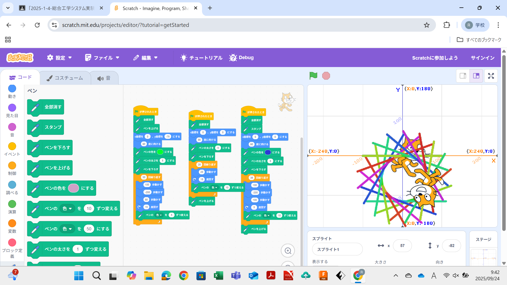
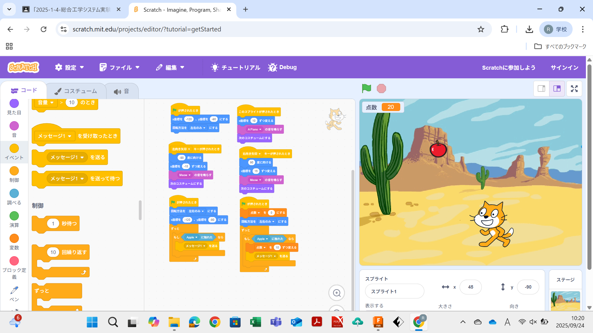

1週目のレポート ： 公大高専１年実習I-1
4組24番 西 隆太
第1週目
1-1 サイエンスアート

1.内容
今回の学習で学んだことは、スクラッチの基礎的な知識と動作を用いてアートを描くというものでした。先生から教えてもらった草案のプログラムを用いて自分の思うようなサイエンスアートを書くことができました。
2.感想
今回の学習の中で、課題のプログラムを二つ同時に作動させることで起こったことや、プログラムミスを見つける方法などが知ることができました。
1-2 ゲーム

1.内容
今回の学習内容で学んだことは、スクラッチ内のキャラクターを増やし、簡単に操作できるプログラムを構築することでゲーム性を持たせることを学びました。
2.感想
今回の学んだ内容を実践した感想は、基本は同じでも作る人によって様々なゲームに変化するということです。それぞれの個性が出ていて興味深かったです。
https://ryuo1121.github.io/web/
1-3 ホームページ作成
私のホームページ
1.内容
今回の学習で学んだことはホームページ作成ツールを使ったホームページの作成方法で、指定された範囲以外にも改良の余地があると感じました。
2.感想
最初のうちはどのようにするのかがわからず、手間取っていましたが、方法を理解すれば楽しくわかりやすくできるようになり、満足するクオリティを出すことができました。
各ページへのリンク
1週目のレポート
2週目のレポート
3週目のレポート
私のホームページ